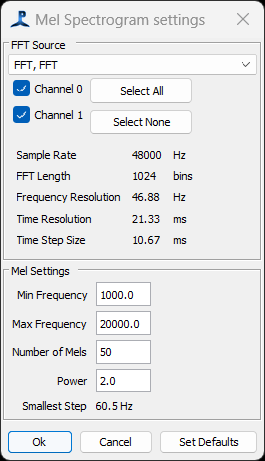

To configure the Mel Spectrogram, , go to the Detection>"your module name" settings ..." menu.

Select the FFT data source from the drop-down list at the top of the dialog. If no FFT sources are available, you'll have to add a FFT module.
The main parameters of the FFT module are displayed in the middle panel. Of these, the most important is the Frequency Resolution, since you can't make Mels with a finer resolution than that which exists in the FFT module.
Set the frequency range and number of Mels. The lowest frequency must be greater than 0, and should probably be bigger than the FFT frequency resolution. The smallest step between frequencies in the Mels is shown at the bottom of the panel. This should also be larger than the FFT frequency resolution, otherwise, all your Mels will be sampling exactly the same FFT data.
Set the 'power' this is the power that samples from the FFT data will be raised to as they are summed into each Mel frequency bin.
When you OK the dialog, it will issue a warning if the configuration of the Mels includes frequencies that are simply to small and close together to make any sense. If requried, you can change the frequency range of the Mel Spectrogram, the number of Mels, or adjust the FFT parameters - a larger FFT Length will give a finer frequency resolution, but a courser time resolution.
Next: Mel Spectrogram Displays
Previous: Mel Spectrogram Overview